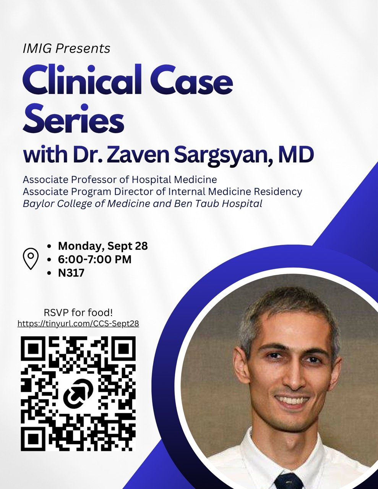

IMIG: Clinical Case Series with Dr. Zaven Sargsyan
- When
- Monday, September 28 · 6:00 PM – 7:00 PM
- Where
- N317
- Host
- Internal Medicine Interest Group (IMIG)
- Posted in
- BCM Internal Medicine Interest Group 2026-2027
- Details
- Interactive case-based session where students build a differential step by step with Dr. Sargsyan, Associate PD of the BCM IM Residency.
- RSVP
- Requested · link
RSVP for food.
Open RSVP form
Flyer

Announcement
Join IMIG for our first Clinical Case Series event of the year with Dr. Zaven Sargsyan on Monday, September 28th at 6:00pm in N317! We will be presenting a clinical case and work with Dr. Sargsyan to build a differential based on the information provided at each step. This is a great opportunity to sharpen your clinical reasoning skills in an interactive, case-based format!
RSVP here: https://tinyurl.com/CCS-Sept28